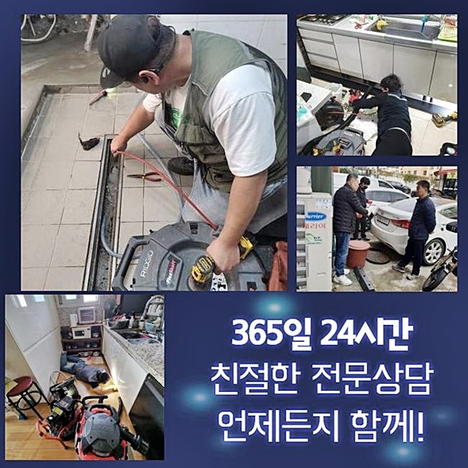
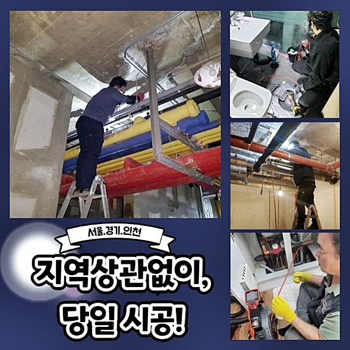
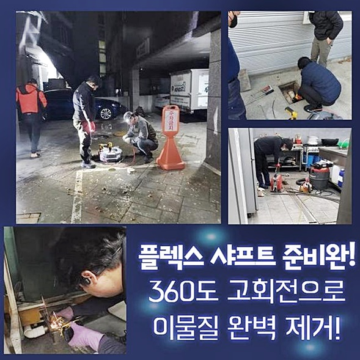
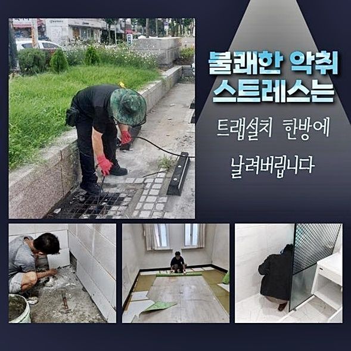
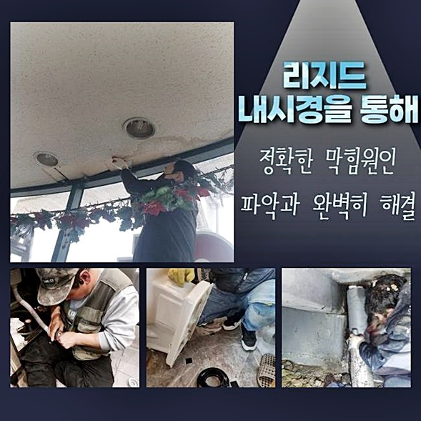
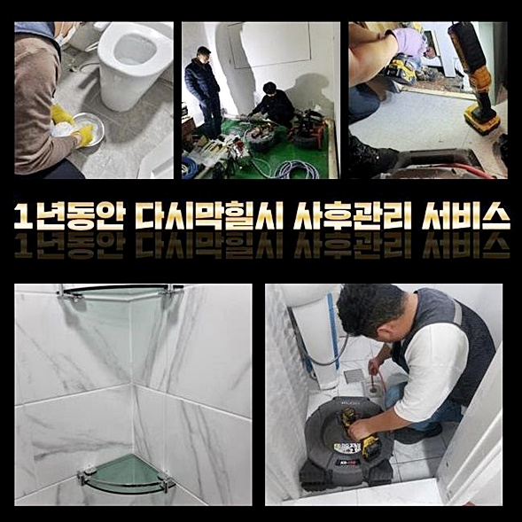
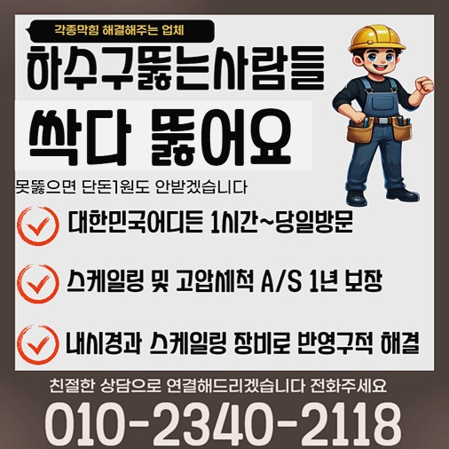

🏠 안산 안산동대변기역류 해양동 하수구뚫는비용 물샘전문업체
안산 해양동 변기막힘 전문 시공 후기

📋 작업 개요
- 위치: 안산 해양동, 해양동, 안산
- 서비스 유형: 변기막힘, 하수구막힘, 배관막힘, 누수수리, 역류해결, 뚫는업체, 배관청소
- 작업 일시: 2024. 10. 4. 17:44
- 업체명: 하수구수사대 (010-5615-2118)
🔍 문제 상황
안산 안산동대변기역류 해양동 하수구뚫는비용 물샘전문업체
저흰 빨간날이라고해도 고객님께서 문제가 발생했다면 신속히내방해 도움을드릴수 있는데요
고객의편의를 우선순위로 생각해서 신속히대처할 준비가되있어요
사소한부분도 신경써서 처리하기위하여 최선을다하고있죠
최근에 내방했던곳은 긴박한 상황이었는데 출장신청에 조속히 대응할수있었죠
전문도구들을 챙겨서 내방했기때문에 효과적인 방법으로 해결할수있었어요
의뢰자분도 여러번이고 문제현상을 경험해보셨지만 오늘처럼 심한막힘과 물이넘치기까지 하여 긴급한상태였죠
작업경험으로 얻은기술이나 노하우로 하수구문제를 확실하게 마무리해볼수 있었답니다
영업운영시 문제없게끔 조치해드렸어요

🔎 원인 분석
💡 전문가 진단: 정밀 진단 장비를 사용하여 슬러지의 고착 여부를 판명하고 타격/세척 작업을 실시했습니다.
긴급한 상황이라해도 일상생활을 하실때 문제가 생기지않도록 성심성의껏 작업하는게 목표에요
2번째로 내방했던장소를 간단히 소개해보도록 하겠습니다
의뢰자와 인사를나눈뒤 내부로이동하여 문제가 발생된위치를 찾았는데요
보일러실부분에 발생되버린 역류현상으로 물이넘쳐있는 상태였어요
2차적인 피해로 연결되지않으려면 빠른수리가 필요했으므로 신속히방문하여 수리해드렸답니다
결과를보니 신속처리가 가능했고 배수시스템이 정상적인 상황으로 복구되었죠
업체선정시 믿음이가는 전문기사를 선정하는게 중요해요
선정할때 요소를 말씀드리면 최신식기계를 보유했는지와 현장경험들을 갖추고있는지도 꼼꼼히 체크해보셔야 한답니다
저희들은 전문장비와 베테랑기술로 작업해드리고있죠
이번현장은 하수관내부에서 일어난 막힘문제였으며 방치할수록 이차적인 문제들이 발생될수있었기에 고객분께서 조속하게 의뢰하셨습니다

🔧 작업 과정
현재의상태를 조속히인지하여 저희들을 불러주셨고 하수도배관이 더큰손해가 일어나기전에 처리할수있었어요
막힌이유를 확인해봤더니 배관입구쪽에 굳은이물질이 퇴적되어있어서 발생한것이죠
덩어리이물은 계속쌓이며 점차딱딱해져 막아버린것이죠
분쇄기기를 활용하여 굳은이물을 분쇄했어요
샤프트기는 빠른속도로 돌아가며 하수구내벽에 쌓여진 오염물질을 효율적으로 제거해주는 장비랍니다
샤프트작업후 내시경기기로 하수구를 세부적으로 조사했어요
카메라기기 끝부분에는 조명이붙어있어 하수구내부까지 파악해볼수있는 기계랍니다
많은양의 이물질과 모발들이 섞여서 쌓여있는걸 확인했으며 이를의뢰자께 내시경화면을 통하여 함께확인후 상태가어떠한지 이해시킬수 있었습니다
예상과달리 더많은 모발들과 오염물질이 쌓인상태였고 전부 제거해주는게 필요했습니다
모발은 하수도를 막히게하기 쉬워서 정기로 청소하지못하면 심각한문제로 이어질수있어요
제거를마치고 확인해보니 새배관으로 교체하거나 2차피해없이 해결해볼수있었죠
문제요지를 자세히파악해서 확실한방법을 마련해야해요 잘못된판단때문에 무리한시공이 진행되는것은 안되기때문이에요
서두에 설명드렸지만 하수구카메라로 자세하게 검사한뒤 오염물을 소거하여 배수관을 깔끔하게 유지해야합니다
잘 관리해주면 이물이 축적되는것을 늦출수있고 약간의 오염물질도 하수구안에 잔여되어있으면 막힘증상이 재차 발현될수있으므로 꼼꼼한작업이 필요하답니다
하수구는대개 신경쓰지않아 막힘증세가 잘나타나고 막히는문제말고도 넘치는현상도 나타난다면 조속히 점검받아야해요
방치하게되시면 물이넘치거나 새는경우로 연결되어 불편이 초래될수있으니 시간상관없이 막히게되셨다면 전화주셔도 됩니다


✅ 작업 완료
저희들은 고객분들의 편리를위해 노력하며 뚫기위해서 모든조치를보일 준비를마치고 있답니다
1시간내로 현장도착을 해드릴수있고 투명히 작업계획을 공개하니 걱정마세요
하수도에증상이 발현했다면 방치하시지말고 문의주시면 상세한응대를 약속할게요!
이것말고도 궁금증이 풀리지않으셨다면 전화를통해 질문하시면 상세한 상담으로 도울게요




⚠️ 베란다 누수 및 방수 관리 방법
- ✅ 비가 많이 올 때 창틀 주변이나 아래층 천장에 얼룩이 생기는지 정기적으로 확인해 보세요.
- ✅ 우수관 주변 실리콘 마감이 들뜨거나 깨진 틈새가 있는지 손상 여부를 수시로 체크하세요.
- ✅ 베란다 바닥 타일의 줄눈(메지)이 소실되면 그 틈으로 물이 침투하여 누수가 유발됩니다.
- ✅ 누수 의심 증상 발견 시 방치하면 아래층 손실이 커지므로 즉시 전문가의 진단을 받으십시오.
💡 핵심 정리
- 확실한 장비 작업(내시경 점검 및 샤프트 스케일링)으로 원인을 뿌리 뽑습니다.
- 작업 후 1년 이내에 동일한 부위 재발 시 100% 무상 A/S 서비스를 보장합니다.
- 서울 · 경기 · 인천 전 지역에 24시간 언제든 긴급 출동할 수 있도록 항시 대기 중입니다.
❓ 자주 묻는 질문 (FAQ)
🚨 안산 해양동 변기막힘 문제로 고민이신가요?
정확한 원인 진단과 확실한 시공으로 재발 없는 해결을 약속드립니다.
24시간 긴급 출동 | 서울 · 경기 · 인천 전지역 | 1년 내 재발 시 무상 A/S